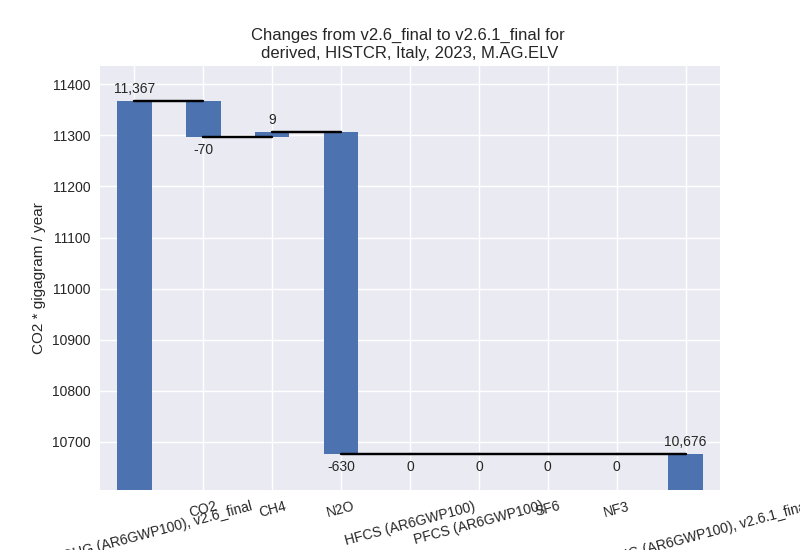
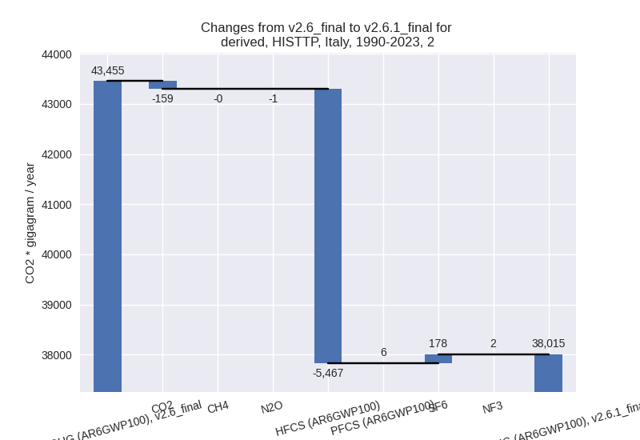

Changes in PRIMAP-hist v2.6.1_final compared to v2.6_final for Italy
2025-03-19
Johannes Gütschow
Change analysis for Italy for PRIMAP-hist v2.6.1_final compared to v2.6_final
Overview over emissions by sector and gas
The following figures show the aggregate national total emissions excluding LULUCF AR6GWP100 for the country reported priority scenario. The dotted linesshow the v2.6_final data.

The following figures show the aggregate national total emissions excluding LULUCF AR6GWP100 for the third party priority scenario. The dotted linesshow the v2.6_final data.
Overview over changes
In the country reported priority scenario we have the following changes for aggregate Kyoto GHG and national total emissions excluding LULUCF (M.0.EL):
- Emissions in 2023 have changed by 0.4%% (1591.38 Gg CO2 / year)
- Emissions in 1990-2023 have changed by 0.3%% (1583.07 Gg CO2 / year)
In the third party priority scenario we have the following changes for aggregate Kyoto GHG and national total emissions excluding LULUCF (M.0.EL):
- Emissions in 2023 have changed by -1.9%% (-7067.50 Gg CO2 / year)
- Emissions in 1990-2023 have changed by -1.6%% (-8064.86 Gg CO2 / year)
Most important changes per scenario and time frame
In the country reported priority scenario the following sector-gas combinations have the highest absolute impact on national total KyotoGHG (AR6GWP100) emissions in 2023 (top 5):
- 1: 1.A, CO2 with 2593.82 Gg CO2 / year (0.9%)
- 2: 4, CH4 with -1454.16 Gg CO2 / year (-7.8%)
- 3: 5, N2O with 776.04 Gg CO2 / year (inf%)
- 4: M.AG.ELV, N2O with -630.31 Gg CO2 / year (-6.6%)
- 5: 2, CO2 with -497.16 Gg CO2 / year (-3.8%)
In the country reported priority scenario the following sector-gas combinations have the highest absolute impact on national total KyotoGHG (AR6GWP100) emissions in 1990-2023 (top 5):
- 1: 5, N2O with 1457.04 Gg CO2 / year (inf%)
- 2: 1.A, CO2 with 106.89 Gg CO2 / year (0.0%)
- 3: 2, PFCS (AR6GWP100) with 58.62 Gg CO2 / year (4.0%)
- 4: 4, CH4 with -42.77 Gg CO2 / year (-0.2%)
- 5: 2, HFCS (AR6GWP100) with 40.86 Gg CO2 / year (0.5%)
In the third party priority scenario the following sector-gas combinations have the highest absolute impact on national total KyotoGHG (AR6GWP100) emissions in 2023 (top 5):
- 1: 2, HFCS (AR6GWP100) with -2951.47 Gg CO2 / year (-15.2%)
- 2: 2, CO2 with -1879.51 Gg CO2 / year (-12.1%)
- 3: 3.A, CH4 with -589.77 Gg CO2 / year (-2.9%)
- 4: 4, CH4 with -565.04 Gg CO2 / year (-5.1%)
- 5: M.AG.ELV, N2O with -229.83 Gg CO2 / year (-2.6%)
In the third party priority scenario the following sector-gas combinations have the highest absolute impact on national total KyotoGHG (AR6GWP100) emissions in 1990-2023 (top 5):
- 1: 2, HFCS (AR6GWP100) with -5466.83 Gg CO2 / year (-33.6%)
- 2: M.AG.ELV, CO2 with -1143.39 Gg CO2 / year (-53.2%)
- 3: 4, CH4 with -908.28 Gg CO2 / year (-4.3%)
- 4: 1.B.2, CH4 with -236.20 Gg CO2 / year (-5.7%)
- 5: 2, SF6 with 178.40 Gg CO2 / year (30.6%)
Notes on data changes
Here we list notes explaining important emissions changes for the country.
- CRT data has been included but replaces official data reported to the EU which does not show noteworthy differences.
- In the TP scenario the main change is for HFCs where EDGAR data has changed.
Changes by sector and gas
For each scenario and time frame the changes are displayed for all individual sectors and all individual gases. In the sector plot we use aggregate Kyoto GHGs in AR6GWP100. In the gas plot we usenational total emissions without LULUCF.
country reported scenario
2023
1990-2023
third party scenario
2023
1990-2023
Detailed changes for the scenarios:
country reported scenario (HISTCR):
Most important changes per time frame
For 2023 the following sector-gas combinations have the highest absolute impact on national total KyotoGHG (AR6GWP100) emissions in 2023 (top 5):
- 1: 1.A, CO2 with 2593.82 Gg CO2 / year (0.9%)
- 2: 4, CH4 with -1454.16 Gg CO2 / year (-7.8%)
- 3: 5, N2O with 776.04 Gg CO2 / year (inf%)
- 4: M.AG.ELV, N2O with -630.31 Gg CO2 / year (-6.6%)
- 5: 2, CO2 with -497.16 Gg CO2 / year (-3.8%)
For 1990-2023 the following sector-gas combinations have the highest absolute impact on national total KyotoGHG (AR6GWP100) emissions in 1990-2023 (top 5):
- 1: 5, N2O with 1457.04 Gg CO2 / year (inf%)
- 2: 1.A, CO2 with 106.89 Gg CO2 / year (0.0%)
- 3: 2, PFCS (AR6GWP100) with 58.62 Gg CO2 / year (4.0%)
- 4: 4, CH4 with -42.77 Gg CO2 / year (-0.2%)
- 5: 2, HFCS (AR6GWP100) with 40.86 Gg CO2 / year (0.5%)
Changes in the main sectors for aggregate KyotoGHG (AR6GWP100) are
- 1: Total sectoral emissions in 2022 are 337976.07 Gg CO2 / year which is 81.4% of M.0.EL emissions. 2023 Emissions have changed by 0.8% (2621.01 Gg CO2 / year). 1990-2023 Emissions have changed by 0.0% (102.58 Gg CO2 / year).
- 2: Total sectoral emissions in 2022 are 25168.60 Gg CO2 / year which is 6.1% of M.0.EL emissions. 2023 Emissions have changed by 1.8% (414.30 Gg CO2 / year). 1990-2023 Emissions have changed by 0.2% (88.75 Gg CO2 / year).
- M.AG: Total sectoral emissions in 2022 are 30982.11
Gg CO2 / year which is 7.5% of M.0.EL emissions. 2023 Emissions have
changed by -2.4% (-777.43 Gg CO2 /
year). 1990-2023 Emissions have changed by -0.1% (-22.87 Gg CO2 / year). For 2023 the
changes per gas
are:
The changes come from the following subsectors:- 3.A: Total sectoral emissions in 2022 are 20323.85 Gg CO2 / year which is 65.6% of category M.AG emissions. 2023 Emissions have changed by -0.4% (-86.29 Gg CO2 / year). 1990-2023 Emissions have changed by -0.0% (-2.54 Gg CO2 / year).
- M.AG.ELV: Total sectoral emissions in 2022 are
10658.26 Gg CO2 / year which is 34.4% of category M.AG emissions. 2023
Emissions have changed by -6.1%
(-691.14 Gg CO2 / year). 1990-2023 Emissions have changed by -0.1% (-20.33 Gg CO2 / year). For 2023 the
changes per gas
are:

There is no subsector information available in PRIMAP-hist.
- 4: Total sectoral emissions in 2022 are 20032.18 Gg
CO2 / year which is 4.8% of M.0.EL emissions. 2023 Emissions have
changed by -7.1% (-1442.54 Gg CO2 /
year). 1990-2023 Emissions have changed by -0.2% (-42.43 Gg CO2 / year). For 2023 the
changes per gas
are:
- 5: Total sectoral emissions in 2022 are 831.41 Gg
CO2 / year which is 0.2% of M.0.EL emissions. 2023 Emissions have
changed by inf% (776.04 Gg CO2 /
year). 1990-2023 Emissions have changed by inf% (1457.04 Gg CO2 / year). For 2023 the
changes per gas
are:
For 1990-2023 the changes per gas are:
third party scenario (HISTTP):
Most important changes per time frame
For 2023 the following sector-gas combinations have the highest absolute impact on national total KyotoGHG (AR6GWP100) emissions in 2023 (top 5):
- 1: 2, HFCS (AR6GWP100) with -2951.47 Gg CO2 / year (-15.2%)
- 2: 2, CO2 with -1879.51 Gg CO2 / year (-12.1%)
- 3: 3.A, CH4 with -589.77 Gg CO2 / year (-2.9%)
- 4: 4, CH4 with -565.04 Gg CO2 / year (-5.1%)
- 5: M.AG.ELV, N2O with -229.83 Gg CO2 / year (-2.6%)
For 1990-2023 the following sector-gas combinations have the highest absolute impact on national total KyotoGHG (AR6GWP100) emissions in 1990-2023 (top 5):
- 1: 2, HFCS (AR6GWP100) with -5466.83 Gg CO2 / year (-33.6%)
- 2: M.AG.ELV, CO2 with -1143.39 Gg CO2 / year (-53.2%)
- 3: 4, CH4 with -908.28 Gg CO2 / year (-4.3%)
- 4: 1.B.2, CH4 with -236.20 Gg CO2 / year (-5.7%)
- 5: 2, SF6 with 178.40 Gg CO2 / year (30.6%)
Changes in the main sectors for aggregate KyotoGHG (AR6GWP100) are
- 1: Total sectoral emissions in 2022 are 313409.31 Gg CO2 / year which is 79.4% of M.0.EL emissions. 2023 Emissions have changed by -0.0% (-53.14 Gg CO2 / year). 1990-2023 Emissions have changed by -0.0% (-187.16 Gg CO2 / year).
- 2: Total sectoral emissions in 2022 are 33249.20 Gg
CO2 / year which is 8.4% of M.0.EL emissions. 2023 Emissions have
changed by -13.9% (-5086.03 Gg CO2 /
year). 1990-2023 Emissions have changed by -12.5% (-5439.87 Gg CO2 / year). For 2023
the changes per gas
are:
For 1990-2023 the changes per gas are:
 - M.AG: Total sectoral emissions in 2022 are 34008.78
Gg CO2 / year which is 8.6% of M.0.EL emissions. 2023 Emissions have
changed by -3.7% (-1311.09 Gg CO2 /
year). 1990-2023 Emissions have changed by -3.7% (-1424.36 Gg CO2 / year). For 2023
the changes per gas
are:
For 1990-2023 the changes per gas are:
The changes come from the following subsectors:- 3.A: Total sectoral emissions in 2022 are 21505.71
Gg CO2 / year which is 63.2% of category M.AG emissions. 2023 Emissions
have changed by -3.1% (-680.81 Gg
CO2 / year). 1990-2023 Emissions have changed by -0.6% (-133.51 Gg CO2 / year). For 2023
the changes per gas
are:
There is no subsector information available in PRIMAP-hist. - M.AG.ELV: Total sectoral emissions in 2022 are
12503.08 Gg CO2 / year which is 36.8% of category M.AG emissions. 2023
Emissions have changed by -4.8%
(-630.28 Gg CO2 / year). 1990-2023 Emissions have changed by -8.3% (-1290.84 Gg CO2 / year). For 2023
the changes per gas
are:
For 1990-2023 the changes per gas are:
There is no subsector information available in PRIMAP-hist.
- 3.A: Total sectoral emissions in 2022 are 21505.71
Gg CO2 / year which is 63.2% of category M.AG emissions. 2023 Emissions
have changed by -3.1% (-680.81 Gg
CO2 / year). 1990-2023 Emissions have changed by -0.6% (-133.51 Gg CO2 / year). For 2023
the changes per gas
are:
- 4: Total sectoral emissions in 2022 are 13004.65 Gg
CO2 / year which is 3.3% of M.0.EL emissions. 2023 Emissions have
changed by -4.2% (-539.73 Gg CO2 /
year). 1990-2023 Emissions have changed by -3.9% (-904.09 Gg CO2 / year). For 2023
the changes per gas
are:
For 1990-2023 the changes per gas are: - 5: Total sectoral emissions in 2022 are 831.41 Gg
CO2 / year which is 0.2% of M.0.EL emissions. 2023 Emissions have
changed by -9.1% (-77.51 Gg CO2 /
year). 1990-2023 Emissions have changed by -7.0% (-109.38 Gg CO2 / year). For 2023
the changes per gas
are:
For 1990-2023 the changes per gas are: